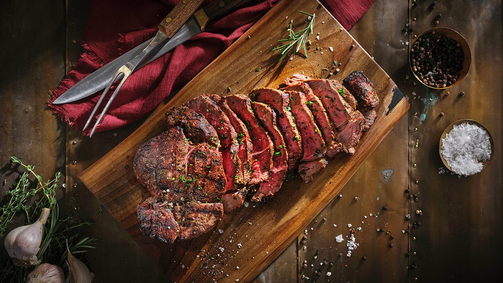

Home
Steak

The Best Grilled Steak
For all the meat lovers out there, we can all agree that steak is up there, here is a grilled steak which was cooked on coal fire.
Ingredients
- 1 ribeye steak
- Salt
- Black pepper
- 1-2 cloves garlic (optional)
- 1 tablespoon butter
- Fresh roesmary or thyme (optional)
Steps
- Let the steak sit at room temperature for 30 minutes
- Pat it dry with a paper towel, then season generously with salt
- Heat a cast iron skillet over high heat until very hot.
- Place the steak in the pan and sear for 2-3 minutes without moving it
- Flip the steak and add butter, garlic, and herbs to the pan
- Baste the steak with melted butter for another 2-3 minutes
- Remove the steak and let it rest for 5-10 minutes before slicing and serving